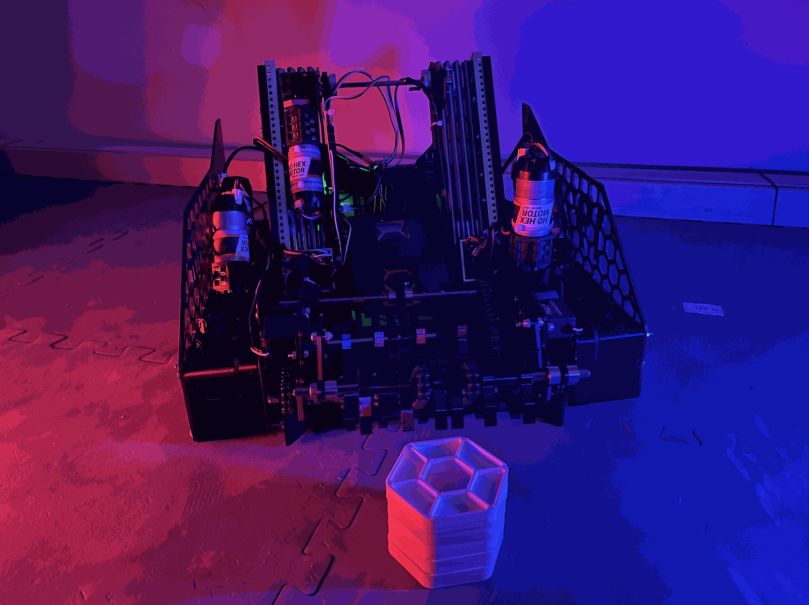
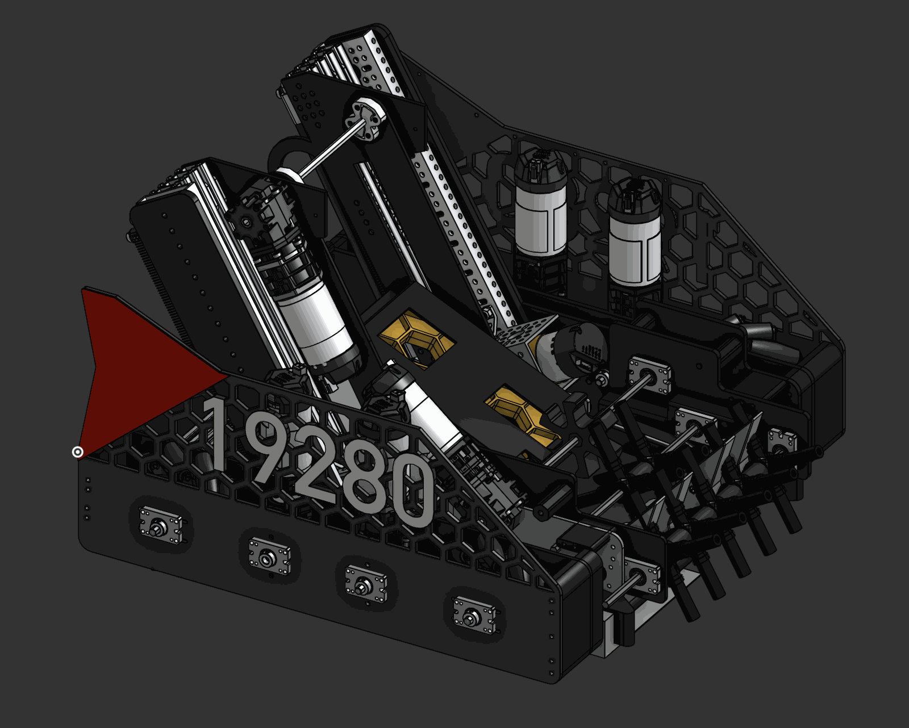
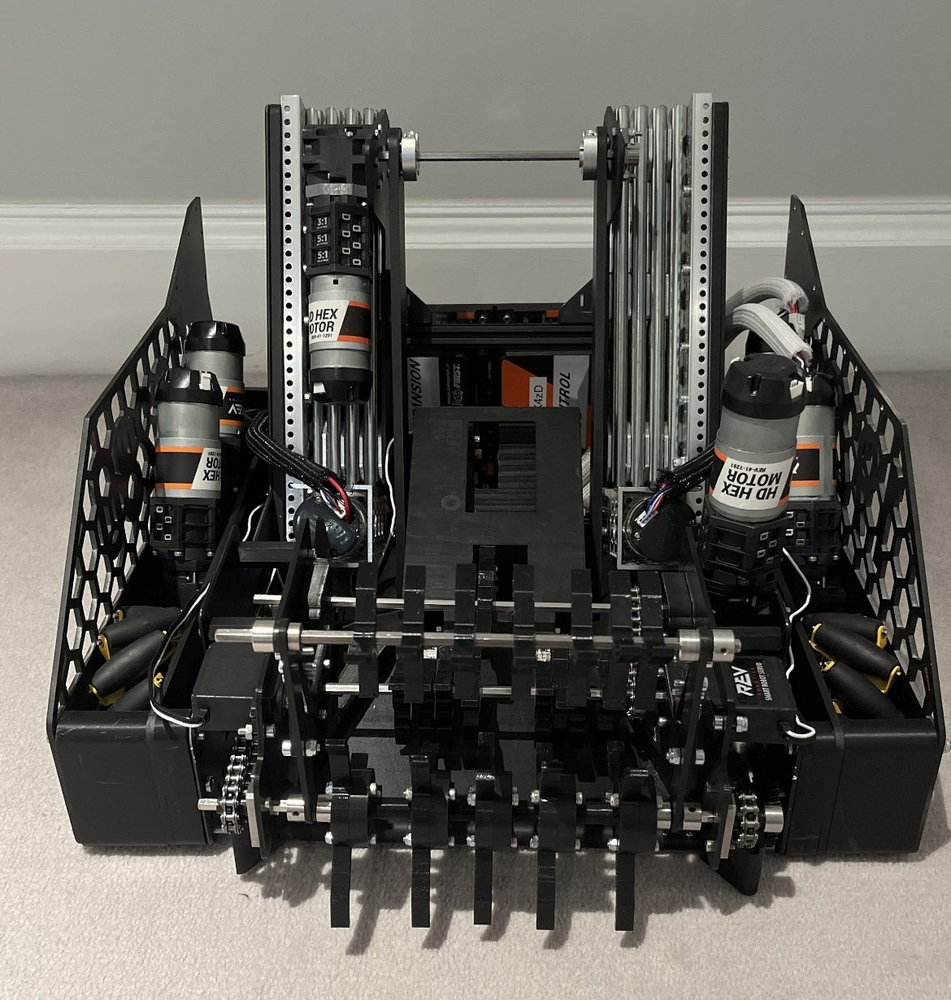
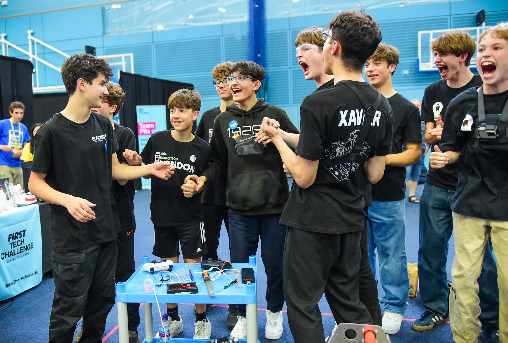
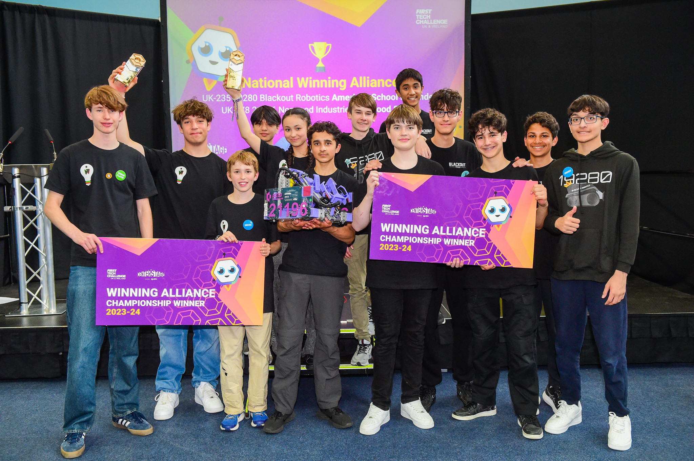

Centerstage was scored by placing hexagonal pixels on an angled backdrop, with bonuses for completing coloured mosaics and crossing height lines. Instead of guessing where the points were, we measured our realistic cycle count through driver practice and designed the robot around an optimised scoring layout.
The season ended with the UK National Championship and UK Control Award — and earned me the FIRST Dean's List Award.

Through repeated driver practice we measured the realistic maximum number of pixels we could cycle in a match — then designed an optimised scoring layout around that number: reaching the highest achievable set line while maximising mosaic count, so every pixel we placed was worth as much as possible.
The field itself imposed constraints the robot had to answer. Every cycle passed under or through the central truss, which capped the robot's height and shaped the chassis profile, and the endgame — launching a paper drone out of the field and climbing the truss — had to be served without compromising cycle speed.
As Lead Designer and team coach I supported the wider CAD and build process while developing the younger members who'd inherit the team, contributing directly to the intake and drivetrain mechanisms.

The robot won on the accumulation of small, deliberate optimisations rather than any single mechanism. The four-bar intake deployed beyond the frame perimeter so we never drove the chassis onto pixels, and the bottom feed roller actively pressed pixels into the rollers' grip zone instead of letting them skate underneath — one small addition that made collection near-lossless at speed.
On the scoring side, two independent release arms dropped pixels one at a time, so differently coloured pixels could land on different backdrop sections in a single cycle — essential for building mosaics efficiently. The slides were angled to match the backdrop's incline, so pixels arrived at the board already at placement angle.



Specify structural parts for impact, not just function. A mid-match collision with another robot snapped our PLA intake extension — a critical failure that degraded scoring for the rest of the event. Printed PLA was fine for the loads we designed for, but not for the loads another 15 kg robot delivers; load-bearing extremities need tougher materials or engineered failure points.
Complexity has to earn its place. Some of our toughest competition ran far simpler robots — basic claws that never jammed, collected reliably, and placed without drama. Our optimisation-heavy design scored faster when everything worked, but the season was a lasting reminder that reliability compounds: the best mechanism is often the simplest one that meets the requirement.
The complete assembly STEP, CAD screenshots and season footage are open on GitHub.
View the repository ↗ ← Previous season: Power Play